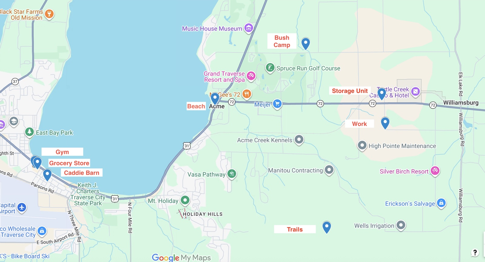
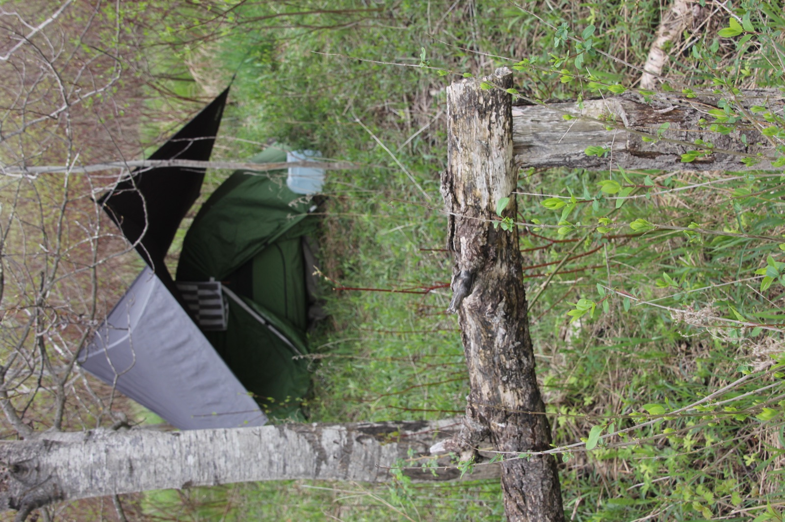
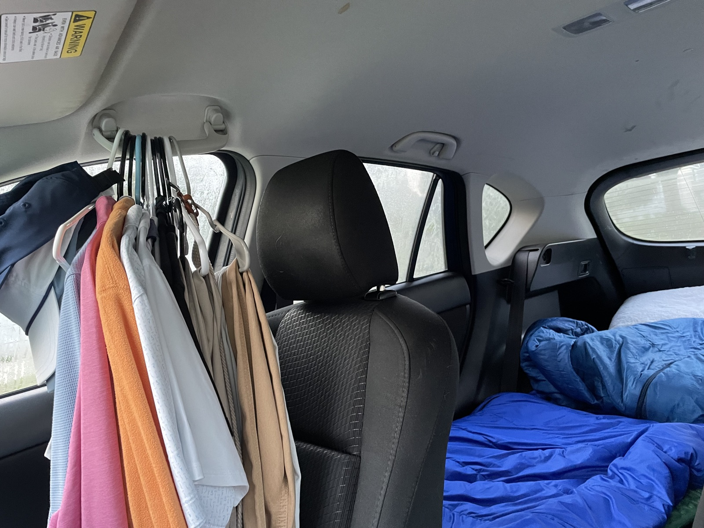
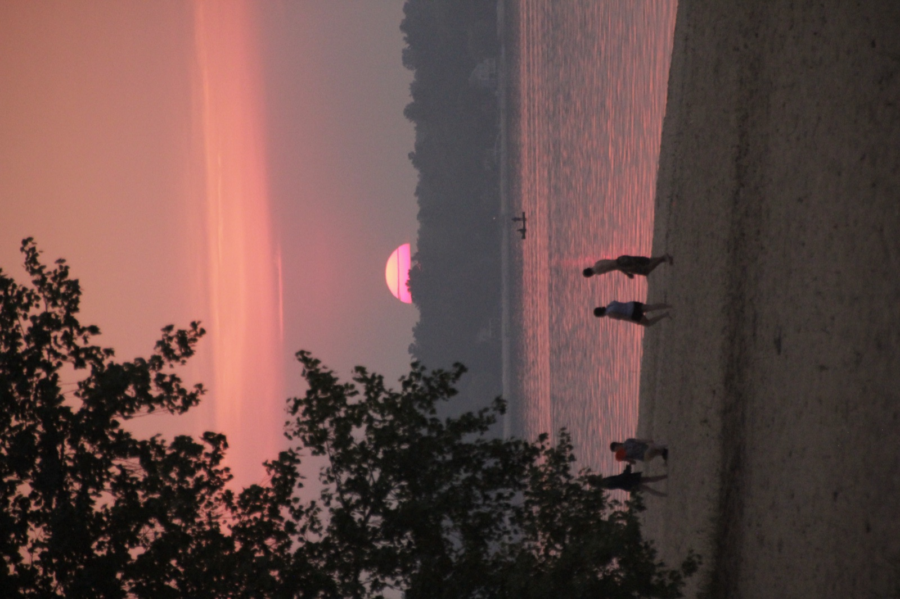
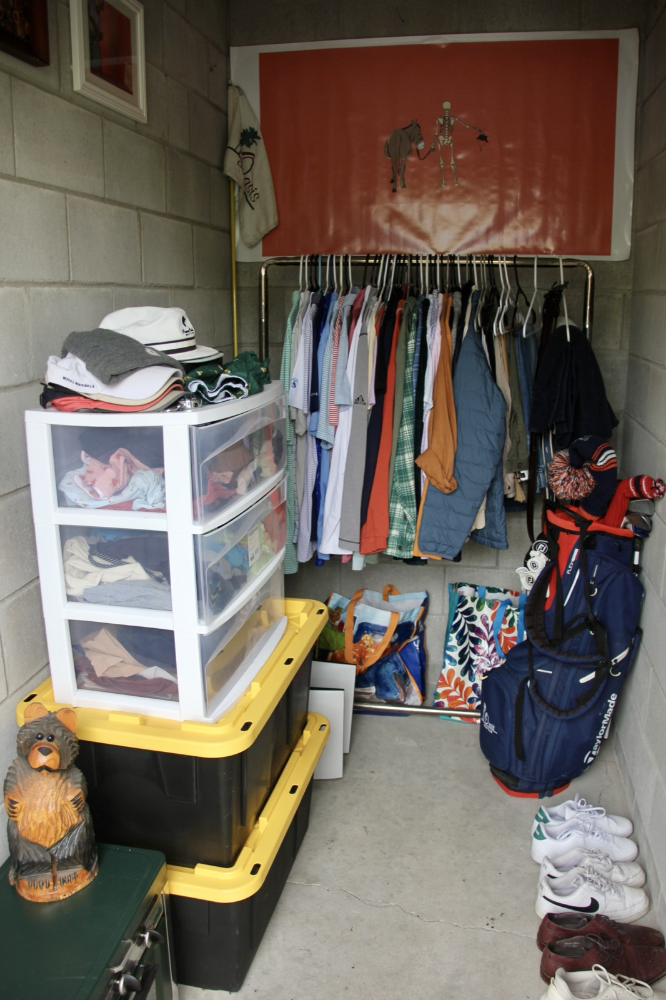
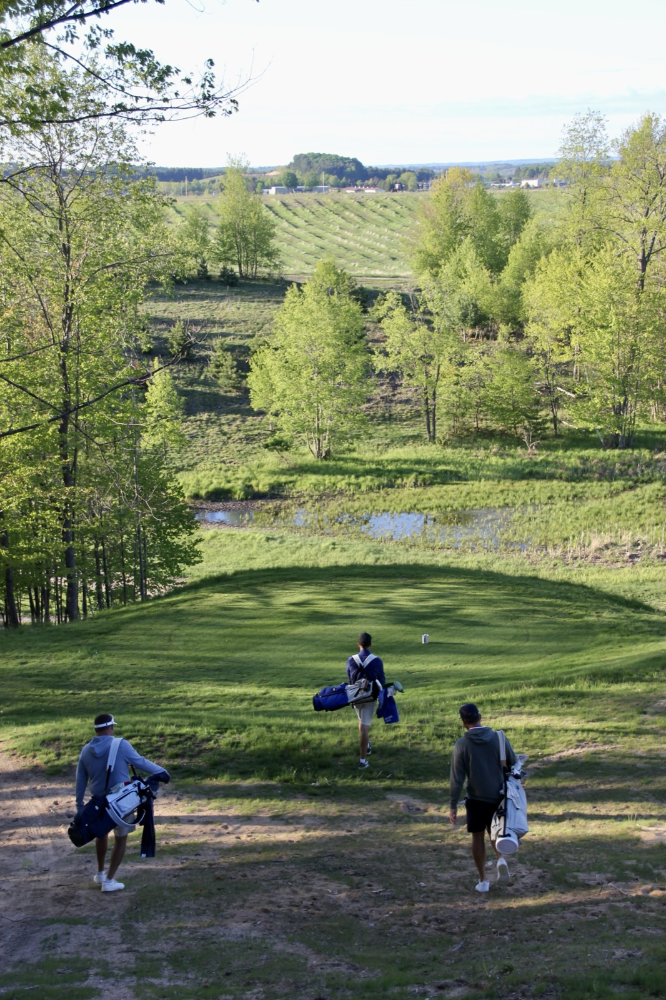

A Caddie Season From a Bush Camp
November 11, 2026
In the summer of ’25, I spent five months as a camping professional golf caddie. Two and a half of those months were spent out of a bush camp in Traverse City, Michigan. This is how I made it work.
Everything I needed was within a 12-minute bubble:
- Bush camp
- Gym
- Beach
- Storage unit
- Work
- Caddie barn
- Hiking trails
- Grocery store

Bush Camp
My bush camp was in the woods behind a campground. That March, I felt the call to live on a farm for the upcoming caddie season. I had rented a room the previous two seasons, and while the rooms were good, I wanted to be connected to nature. Whenever I camped, I always felt better the next morning. Something about natural daylight paired with the sounds of nature resets my circadian rhythm.
I reached out to a cowboy I know: “Do you know of anywhere I could live in Traverse City?”
“Yes, Sam, I do, and it’s actually perfect. Reach out to Dennis at this campground. He’s open to long-term stays. There’s a little trail out back with a freshwater stream. You’re going to love it.”
The cowboy gave me Dennis’s number, I gave him a call, and Dennis was up for it.
My setup included a one-person tent, a hammock rainfly, a tarp ground cover and a camp chair. I slept on a foam pad and an inflatable pad with a pillow and two sleeping bags, one as a base and one as a cover. This was my residence for the season.

I parked near the campground entrance, where there were porta-potties, and walked through the campground and back into the woods. It was about a five-minute walk each way.
At night, the parking spot was where I brushed my teeth, refilled my water bottle from jugs, and changed out of golf clothes into camping clothes. I had car camped my first week on the road and kept that setup: a sleeping pad, pillow and sleeping bag stretched out behind the passenger seat. On nights of heavy rain, I simply slept in the car.

The bush camp was purely for sleeping. I arrived each night at sunset or well after, and I woke up around 6 a.m. to head to the gym and the beach.
Gym
I went to Anytime Fitness. Each morning, I carried my caddie clothes in from where they hung on the passenger headrest, along with my gym bag. The gym had a hanging rack and cubbies, which made it easy.
This gym was very important for two reasons: private bathrooms with showers, and a turf floor. The turf became essential midway through the summer, when I would lie on it for 10 minutes and begin my day with light movement. Caddying means carrying 40 to 50 pounds for six miles a day, and it’s hard on the body. The private bathrooms gave me peace to shower after working out, allowing a great start to the day. The facilities were also extremely nice, and the gym was my shower whenever I needed one before a night on the town.
Beach
There were beaches galore. The bush camp was about two miles from the coastline, and the gym was right across from the water. Some beaches had no trail, some had short trails and some had long trails down to the water.
Most times I went in, I brought Dr. Bronner’s soap to wash my hair and body. It felt like I’ve never lived a cleaner life, despite living in a bush camp. I also had a pair of goggles so I could get in some good strokes to wake up my body.
I dipped in the water almost every day I went to the gym, before or after my workout. This helped cool my body down and reset my nervous system.
Afterward, I hung my wet towels on hangers from the car’s grab handles. The soap and goggles went in my gym bag, which stayed behind the driver’s seat where the towels hung above.

Storage Unit
My storage unit was five minutes east of the bush camp, on the way to work. It was 5 by 10 feet, the perfect size. I had a closet rack for hanging clothes and a three-drawer organizer for shirts, pants and socks. I also kept my shoes, golf clubs, books and extra camping gear there.
I kept three outfits hanging from my headrest and two sets of gym clothes in my gym bag. Every other day I stopped at the unit to swap clothes, grab a new golf hat and so on. It was secured with a combination padlock.

Work
I had the privilege of working at High Pointe Golf Club in its opening season. I had caddied for the owner, Rod Trump, during my time at Panther National. He thanked me after every club I cleaned and every divot I filled. After the round, he invited me up to High Pointe, and I knew I wanted to work there.
High Pointe was eight minutes from the bush camp and 13 minutes from the gym. Every evening, the caddie manager texted me my assignment for the next day. If I didn’t get a text, I was technically on call. That variability is one of the reasons I chose an outdoor adventure life. The daily caddie schedule changes so much that I wanted to lean into it and flow with whatever came.
Each loop took about four and a half hours. We were taken care of and paid well, and the caddie yard was phenomenal. Some days I went out for two loops with a 30-minute break in between. I would drive to the beach, swim, and drive right back. Other nights I would get a text in my tent at 10 p.m., not for a 9 a.m. caddie assignment, but for a 9 a.m. tee time with other caddies. I’d say yes and need to be at the Red Barn by 7 a.m. Those nights felt like Christmas Eve.

Caddie Barn
The Red Barn is where the other caddies lived. It was a 12-minute drive from the bush camp and two minutes from the gym. When I arrived in May, I told the guys what I was up to, and they were very supportive. I could do laundry and cook there for a really low cost. Some days I would finish my morning routine and pop in before heading to the course. For weeks, stopping in to recount our loops and hang out was part of the routine. At the very end of the season, I lived at the barn for five days.
Hiking Trails
There were great hiking trails at Maple Bay Farms and on the VASA Trail. Maple Bay was eight minutes from the bush camp, and the VASA was nine. I went hiking once or twice a week.
Grocery Store
Tom’s Food Market was in the same parking lot as the gym, 12 minutes from the bush camp. My car was always in adventure mode. I kept a cooler inside for meals I prepped at the barn, and a corrugated basket for smoothie ingredients and snacks: water jugs, bagels, apples and protein bars. I had at least two smoothies a day, made in a portable blender that charged over USB-C, with banana, peanut butter, protein powder and granola.